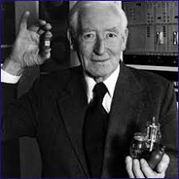

Tommy Flowers wurde am 22. Dezember 1905 im East End von London geboren. Er war der Sohn eines Maurers. Er machte eine Ausbildung im Maschinenbau. Danach studierte er Elektrotechnik an der University of London. 1926 begann er beim Telekommunikationsdienst der General Post Office zu arbeiten. 1930 wechselte er zur Forschungsstation in Dollis Hill. Ab 1935 arbeitete er mit Elektronik für Telefonzentralen. 1939 war er überzeugt: Ein vollständig elektronisches System ist möglich. Diese Erfahrung war später sehr wichtig für seine Arbeit an Computern im Zweiten Weltkrieg.
Tommy Flowers war Elektroingenieur. Im Zweiten Weltkrieg arbeitete er für das britische Fighter Command an Radarsystemen. 1941 wurde er nach Bletchley Park geschickt. Dort half er den Codeknackern. Er arbeitete besonders mit dem Mathematiker Alan Turing. Er baute eine elektromechanische Maschine mit schnellen Schaltern, um den deutschen Enigma-Code zu entschlüsseln. Diese Maschine wurde später durch neue Methoden ersetzt. Er entwickelte auch den Computer Colossus. Colossus half, deutsche Codes im Zweiten Weltkrieg zu entschlüsseln. Flowers leitete das Team, das diesen Computer baute. Zu seinen Ehren erhielt er eine blaue Gedenktafel von English Heritage an der ehemaligen Forschungsstation Dollis Hill.
Im Zweiten Weltkrieg arbeitete Tommy Flowers an dem streng geheimen Projekt Colossus. Das Ziel war, den deutschen Enigma-Code zu entschlüsseln. Enigma war ein sehr kompliziertes Verschlüsselungssystem mit vielen Rotoren und elektrischen Verbindungen. Der Bau von Colossus war sehr schwierig. Es gab viele Probleme und Rückschläge. Die Maschine war über zwei Meter hoch und bestand aus tausenden elektronischen Teilen. Dazu gehörten viele Vakuumröhren, die als Schalter dienten. Sie mussten oft repariert werden, waren aber schneller und zuverlässiger als frühere mechanische Systeme. Flowers und sein Team entwarfen und bauten die Maschine gemeinsam. Sie trafen neue technische Entscheidungen und lösten viele schwierige Probleme. Im Dezember 1943 war Colossus fertig. Er war ein großer Fortschritt und machte schnellere und genauere Berechnungen möglich als frühere Maschinen.
Erstellt von: Alejandro Salas